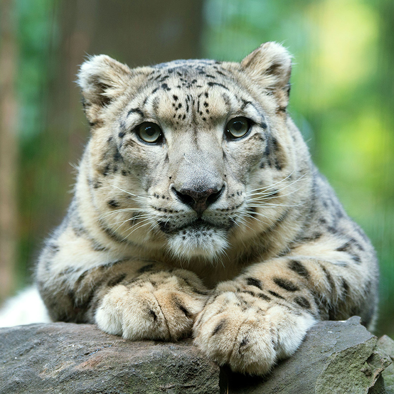

About our Park
MANHATTAN’S CENTRAL PARK ZOO IS ONE OF THE OLDEST IN THE COUNTRY, FIRST OPENING ON ITS CURRENT SITE IN 1861. IN THE 1980S, THE WILDLIFE CONSERVATION SOCIETY ASSUMED MANAGEMENT OF THE PARK UNDER A CONTRACT WITH THE CITY OF NEW YORK AND COMPLETED A DRAMATIC FIVE YEAR TRANSFORMATION. SINCE REOPENING IN 1988, OUR MISSION HAS BEEN TO ENGAGE FUTURE GENERATIONS OF CONSERVATIONISTS AND CREATE WILDLIFE CHAMPIONS.
location
64th Street & 5th Avenue New York, NY 10065